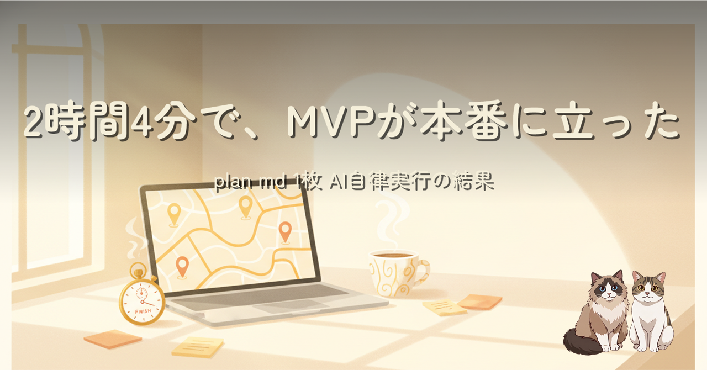
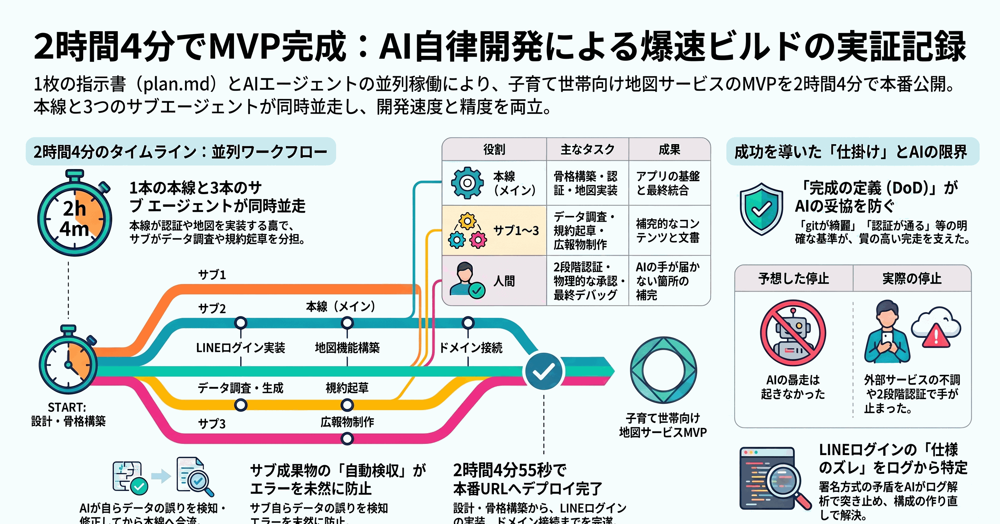
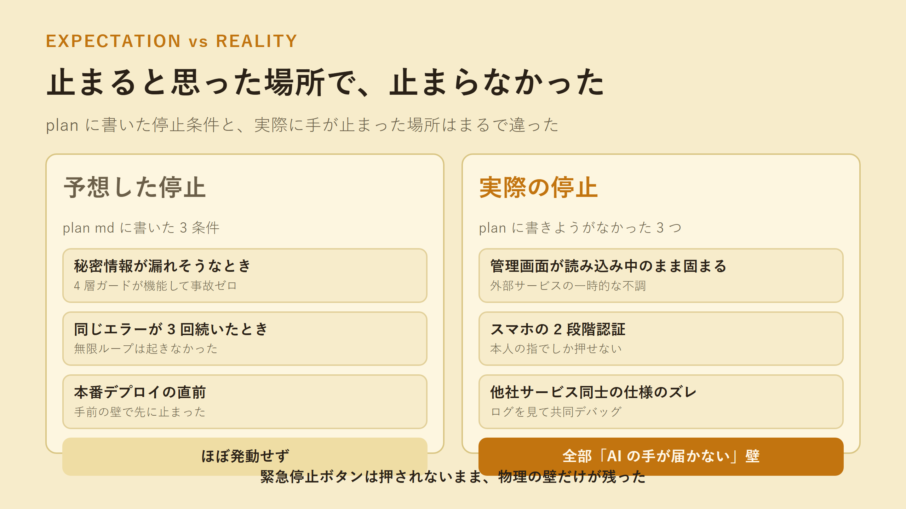

plan md 1 枚に 11 の仕掛けを仕込んで AI エージェントに実装を任せる実験、の結果編。実装開始から 2 時間 4 分 55 秒で v0.1.0 の MVP が本番 URL に立ち、LINE ログインも最後まで通りました。予想した停止条件はほぼ発動せず、実際に止まったのは「plan に書きようがない壁」だった、という記録です。
前作（plan md 1 枚で AI エージェントが最後まで走れるように、11 の仕掛けを仕込んだ）で準備した plan を実際に走らせた結果を振り返ります。効いた仕掛け（完成の定義・受け入れ基準・サブエージェント並列・成果物の検収）と、効かなかった予想（停止条件 3 つはほぼ未発動）、そして plan の守備範囲外で起きた LINE ログインの署名方式の相性問題まで。


plan づくりに使った 3 時間は初日で回収されました。一方で完了条件は「画面が出た」ではなく「一連の流れが最後まで通った」で書くべきだった、という反省も。実行が速くなった分、ボトルネックは「決めて、書き切る」準備側に移っています。